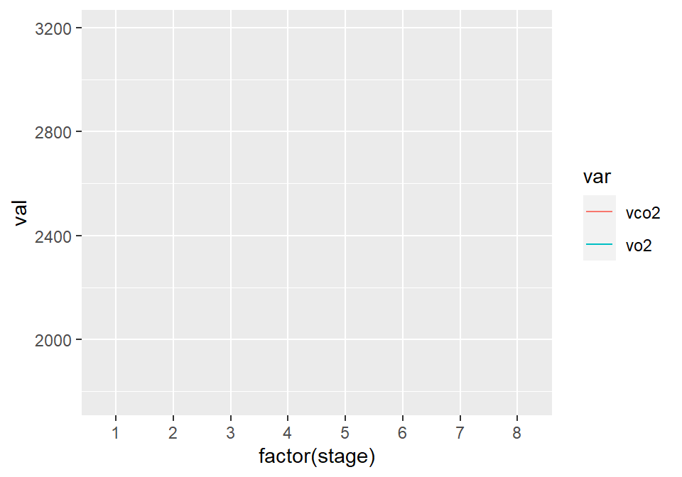

Chapter 8 Line Graphs
Line graphs are typically used for visualizing how one continuous variable, on the y-axis, changes in relation to another continuous variable, on the x-axis. Often the x variable represents time, but it may also represent some other continuous quantity, for example, the amount of a drug administered to experimental subjects.
As with bar graphs, there are exceptions. Line graphs can also be used with a discrete variable on the x-axis. This is appropriate when the variable is ordered (e.g., “small”, “medium”, “large”), but not when the variable is unordered (e.g., “cow”, “goose”, “pig”). Most of the examples in this chapter use a continuous x variable, but we’ll see one example where the variable is converted to a factor and thus treated as a discrete variable.
Let us prepare for this chapter by first importing a Vo2 treadmill test data that we have cleaned, and placed in the data folder. See Recipe 6.15. The Excel sheet is called "treadmill_pt4_clean.xlsx".
dat <- read.xlsx (xlsxFile = "data/treadmill_pt4_clean.xlsx",
sheet = "Sheet1")
dat <- dat %>%
mutate (stage = cut_interval(time, length = 210, labels = FALSE)) %>%
group_by(stage) %>%
mutate (row_id = row_number()) %>%
filter (row_id < 37) %>%
slice_tail (n = 6)%>%
summarise_at (vars(bf:hr), mean)8.1 Making a Basic Line Graph
8.1.2 Solution
Use ggplot() with geom_line(), and specify which variables you mapped to x and y (Figure 8.1):
ggplot(dat) +
geom_line(aes(x = stage, y = vo2)) 
Figure 8.1: Basic line graph
8.1.3 Discussion
In this sample data set, the x variable, time, is in one column and the y variable, vo2, is in another:
| stage | bf | vo2_norm | rer | vo2 | vco2 | ve | hr |
|---|---|---|---|---|---|---|---|
| 1 | 30.67 | 31.97 | 0.87 | 2052.83 | 1777.83 | 55.17 | 136.50 |
| 2 | 34.67 | 34.60 | 0.88 | 2222.17 | 1957.50 | 59.33 | 147.00 |
| 3 | 34.67 | 37.42 | 0.91 | 2401.83 | 2191.33 | 66.67 | 161.33 |
| 4 | 38.00 | 37.83 | 0.95 | 2429.00 | 2312.50 | 71.17 | 172.17 |
| 5 | 44.00 | 41.67 | 1.00 | 2675.00 | 2686.00 | 85.67 | 178.50 |
| 6 | 45.67 | 43.85 | 1.06 | 2813.67 | 2981.17 | 99.83 | 185.83 |
| 7 | 54.50 | 45.50 | 1.09 | 2920.17 | 3195.83 | 110.33 | 192.33 |
| 8 | 57.33 | 45.48 | 1.05 | 2910.83 | 3068.83 | 112.17 | 195.17 |
With ggplot2, the default y range of a line graph is just enough to include the y values in the data. For some kinds of data, it’s better to have the y range start from zero. You can use ylim() to set the range, or you can use expand_limits() to expand the range to include a value. This will set the range from zero to the maximum value of the demand column in BOD (Figure 8.2):
# These have the same result
ggplot(dat) +
geom_line(aes(x = stage, y = vo2)) +
ylim(0, max(dat$vo2))
ggplot(dat) +
geom_line(aes(x = stage, y = vo2)) +
expand_limits(y = 0)
Figure 8.2: Line graph with manually set y range
8.2 Making a Line Graph with Multiple Lines
8.2.2 Solution
In addition to the variables mapped to the x- and y-axes, map another (discrete) variable to colour or linetype, as shown in Figure 8.3:
# Bring all variables into one column
dat_long <- dat %>%
dplyr::select (stage, vo2, vco2) %>%
pivot_longer(cols = c(vo2:vco2),
names_to = "var",
values_to = "val") %>%
mutate (var = factor (var))
# Map supp to colour
ggplot(dat_long) +
geom_line(aes(x = stage, y = val, colour = var))
# Map supp to linetype
ggplot(dat_long) +
geom_line(aes(x = stage, y = val, linetype = var))

Figure 8.3: A variable mapped to colour (left); A variable mapped to linetype (right)
8.2.3 Discussion
The dat_long data has three columns, including the factor var, which we mapped to colour and linetype:
| stage | var | val |
|---|---|---|
| 1 | vo2 | 2052.83 |
| 1 | vco2 | 1777.83 |
| 2 | vo2 | 2222.17 |
| 2 | vco2 | 1957.50 |
| 3 | vo2 | 2401.83 |
| 3 | vco2 | 2191.33 |
| 4 | vo2 | 2429.00 |
| 4 | vco2 | 2312.50 |
| 5 | vo2 | 2675.00 |
| 5 | vco2 | 2686.00 |
| 6 | vo2 | 2813.67 |
| 6 | vco2 | 2981.17 |
| 7 | vo2 | 2920.17 |
| 7 | vco2 | 3195.83 |
| 8 | vo2 | 2910.83 |
| 8 | vco2 | 3068.83 |
Note
If the x variable is a factor, you must also tell ggplot to group by that same variable, as described below.
Line graphs can be used with a continuous or categorical variable on the x-axis. Sometimes the variable mapped to the x-axis is conceived of as being categorical, even when it’s stored as a number. In the example here, there are eight values of stage: 1, 2, 3, 4, 5, 6, 7, 8. You may want to treat these as categories rather than values on a continuous scale. To do this, convert stage to a factor (Figure 8.4):
ggplot(dat_long) +
geom_line(aes(x = factor (stage), y = val, colour = var, group = var))
Figure 8.4: Line graph with continuous x variable converted to a factor
To convert a variable to a factor , see also Recipe 6.11.
Notice the use of group = var. Without this statement, ggplot won’t know how to group the data together to draw the lines, and it will not plot anything:
ggplot(dat_long) +
geom_line(aes(x = factor (stage), y = val, colour = var))
#> geom_path: Each group consists of only one observation. Do you need to adjust
#> the group aesthetic?
8.3 Changing the Appearance of Lines
8.3.2 Solution
The type of line (solid, dashed, dotted, etc.) is set with linetype, the thickness (in mm) with size, and the color of the line with colour (or color).
These properties can be set (as shown in Figure 8.5) by passing them values in the call to geom_line():
ggplot(dat) +
geom_line(aes(x = stage, y = vo2),
linetype = "dashed", size = 1, colour = "blue")
Figure 8.5: Line graph with custom linetype, size, and colour
If there is more than one line, setting the aesthetic properties will affect all of the lines. On the other hand, mapping variables to the properties, as we saw in Recipe 8.2, will result in each line looking different. The default colors aren’t the most appealing, so you may want to use a different palette, as shown in Figure 8.6, by using scale_colour_brewer() or scale_colour_manual():
ggplot(dat_long) +
geom_line(aes(x = stage, y = val, colour = var)) +
scale_colour_brewer(palette = "Set1")
Figure 8.6: Using a palette from RColorBrewer
8.3.3 Discussion
To set a single constant color for all the lines, specify colour outside of aes(). The same works for size, linetype, and point shape (Figure 8.7). You may also have to specify the grouping variable:
# If both lines have the same properties, you need to specify a variable to
# use for grouping
ggplot(dat_long) +
geom_line(aes(x = stage, y = val, group = var),
colour = "darkgreen", size = 1.5)
# Since supp is mapped to colour, it will automatically be used for grouping
ggplot(dat_long) +
geom_line(aes(x = stage, y = val, colour = var), linetype = "dashed") +
geom_point(aes(x = stage, y = val, colour = var),shape = 22, size = 3, fill = "white")

Figure 8.7: Line graph with constant size and color (left); With supp mapped to colour, and with points added (right)
The range of different linetypes that is available can be seen in (Figure 8.8)

Figure 8.8: The different types of linetype you can use.
8.4 Using Themes to Change Overall Appearance of Plot
8.4.2 Solution
There are many premade themes that are already included in ggplot2. The default ggplot2 theme is theme_grey(), but the examples below also showcase theme_bw(), theme_minimal(), and theme_classic().
To use a premade theme, add theme_bw() or another theme to your plot (Figure 8.9):
# Create the base plot
hw_plot <- ggplot(dat) +
geom_line(aes(x = stage, y = vo2))
# Grey theme (the default)
hw_plot +
theme_grey()
# Black-and-white theme
hw_plot +
theme_bw()
# Minimal theme without background annotations
hw_plot +
theme_minimal()
# Classic theme, with axis lines but no gridlines
hw_plot +
theme_classic()


Figure 8.9: Scatter plot with theme_grey() (the default, top left); with theme_bw() (top right); with theme_minimal() (bottom left); with theme_classic() (bottom right)
8.5 Learning check
From your learning check in 7.9, open up your
practice_script.R.Import the Excel file
data/Athlete_1_treadmill.xlsx, and the sheetraw, and assign it to an objectdat. See Recipe 5.2. Also import the the sheetstagefrom the same file, and assign it to an objectdat_stage.Rename the columns of
datto be("time", "bf", "vo2_norm", "rer", "vo2", "vco2", "ve", "hr"), respectively. See Recipe 6.2.Remove the first row of the
datdata, as it is useless. See Recipe 6.3.Convert the variable
timeofdatinto numeric seconds, and all other variables to numeric. See Recipe 6.6 and 6.5, respectively.Create a variable called
stage, where each stage represents 3:30 min worth of VO2 data. See Recipe 6.7.For each stage, create a variable called
row_id, which essentially represents the number of 5 sec windows in each stage. See Recipe 6.12 and 6.15.For each stage, remove the data between 3 to 3:30min. See Recipe 6.15 and 6.13.2.
For each stage, keep the last six rows of data. See Recipe 6.15 and 6.3.
For each stage, calculate for all variables for the mean of the last six rows of data. See Recipe 6.15 and 6.14. Assign this table to an object called
dat_summ.Merge the two tables
dat_summanddat_stage, by the common variable calledstage. See Recipe 6.16. Assign this table to an object calleddf_plot.Using
df_plot, make a line plot with withspeedas the x axis, andvo2as the y axis, and assign it to an object calledf. See Recipe 8.1.Save image
fto a file calledmyfig.png. See Recipe 7.8.You must be wondering, why can’t I see the figure. What must you do to print the picture? See Recipe 2.3.
Download the solution to this learning check below.